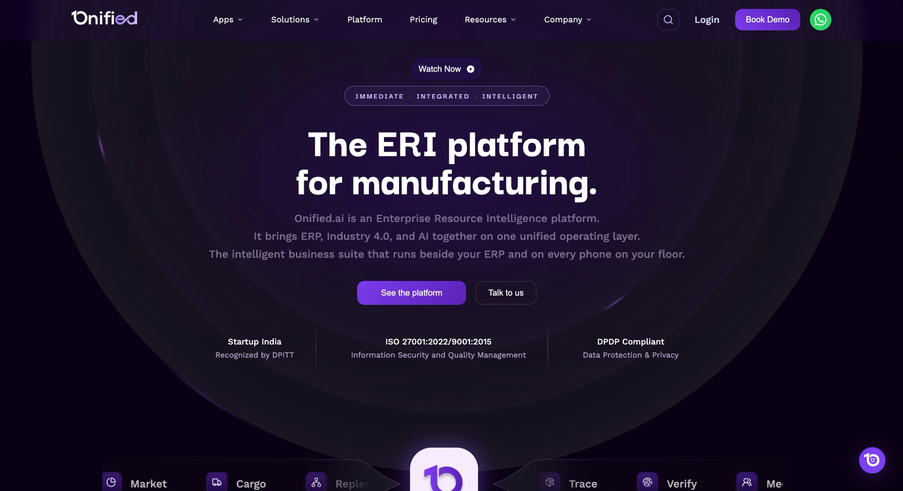
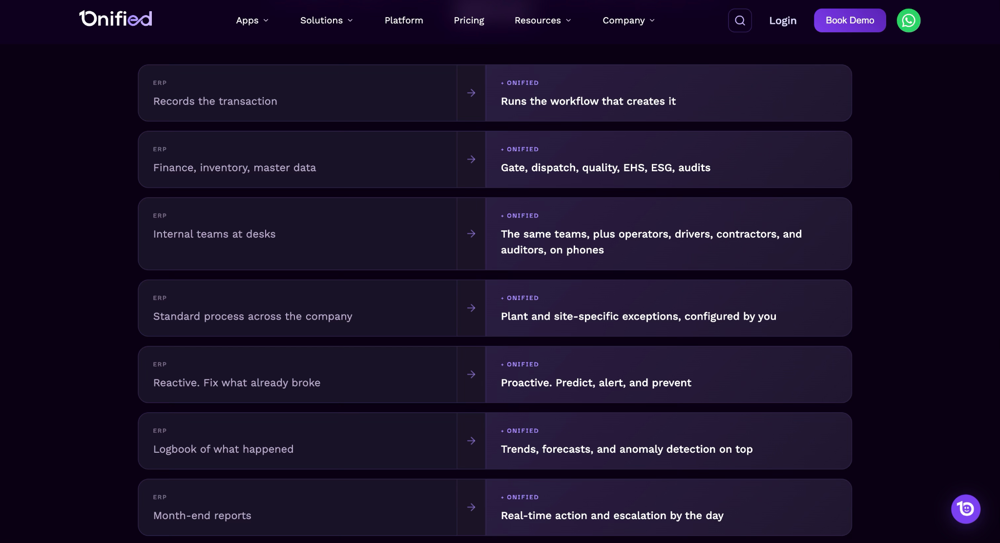
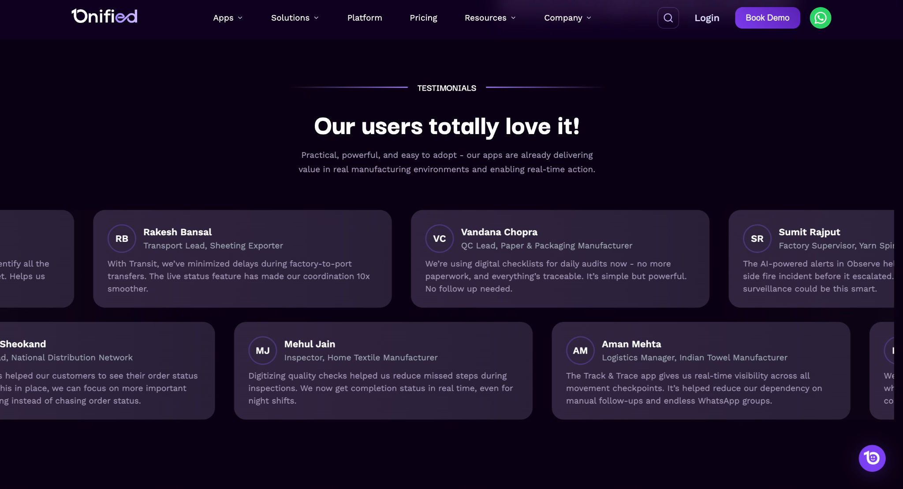
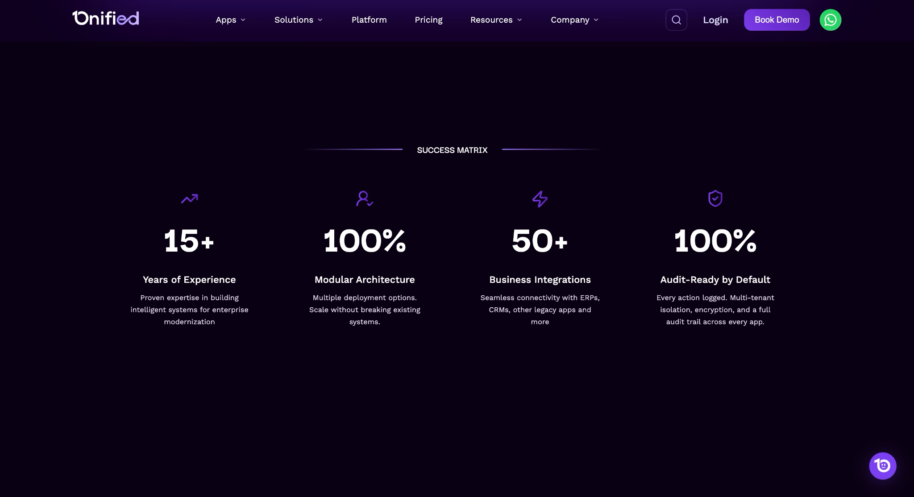

Onified.ai
A web design project focused on presenting a complex enterprise resource intelligence platform through a clear, modern and conversion-focused digital experience.

Web design overview
Onified.ai is an Enterprise Resource Intelligence platform for manufacturing that brings ERP, Industry 4.0 and AI together on a unified operating layer. The public website communicates a broad enterprise ecosystem while guiding different audiences toward the right platform entry point.
Platform story
Explain a complex ERI proposition in a way that is easy to scan and understand.
Product ecosystem
Present multiple applications and operational areas without making the experience feel fragmented.
Conversion
Move visitors from understanding the platform to exploring the platform or requesting a demo.
Design brief
The web experience needed to make the relationship between ERP, Onified and Industry 4.0 easy to understand. The site positions Onified as the workflow and intelligence layer beside an existing ERP, then progressively introduces products, audiences, capabilities and impact areas.
Audience & entry points
The website presents three audience doorways based on the visitor's existing systems: coexist, extend and greenfield.
Coexist
Large manufacturers using SAP, Oracle or Dynamics can connect Onified through APIs and add intelligence, Industry 4.0 and partner applications.
Extend
Mid-sized manufacturers can extend Tally, SAP B1 or NetSuite with mobile-first workflows and AI.
Greenfield
Smaller manufacturers can start with an AI-native, mobile-first operating layer without a legacy ERP.
Information architecture
The content architecture moves from the platform story into products, audience-specific entry points, security, impact and conversion. The wider platform navigation also exposes Platform, Solutions, Company and supporting resources.
Web design direction
Progressive disclosure
Start with a concise ERI proposition, then reveal deeper product and workflow information as the visitor continues.
Modular storytelling
Reusable sections make a large product ecosystem easier to scan and extend across pages.
Audience-led navigation
Different starting conditions are acknowledged through Coexist, Extend and Greenfield pathways.
Conversion clarity
Platform exploration and demo actions remain visible throughout the experience.
Final product experience
The public experience combines platform positioning, product discovery, audience doorways, security/compliance, impact areas, testimonials, success metrics and a focused pilot CTA.




My contribution
This case study is positioned specifically as a web-design project. It focuses on the website experience, information hierarchy, responsive UI and visual communication. It does not claim undocumented product metrics or responsibilities.
Live website
See the current public website, platform positioning, product ecosystem and conversion experience.
Want to talk through a web design challenge?
Let's connect and explore the problem, the users, and what a strong web experience could look like.